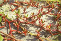
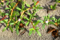
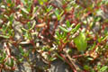
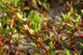
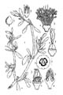

Common name in Tamil : Vankiruvalai
Common name in Telugu : Vangarreddi kura





Diagnostic characters
Botany & morphology
Ecology
Distribution
Herbs or undershrubs, erect or prostrate; stem succulent, rooting at nodes. Leaves fleshy, linear – oblanceolate. Flowers purple; seeds black, shiny.
Leaves simple, opposite, linear - oblanceolate, apex rounded or slightly emarginate, base attenuate, fleshy, entire, 2-6 x 0.5-1.5 cm.
Inflorescence axillary cymes.
Flowers small, purple, bisexual, regular, sessile or peduncled; calyx tube 5 - lobed, persistent, colored within; petals absent; stamens 5 or many, inserted round the top of the calyx - tube, filament usually connate at base; ovary free, 3 - 5 celled, style 3 - 5.
Fruit circumscissile capsule, ovate, membranous 3 - 5 celled, axis and placentas persistent; seeds many, reniform.
It is a back mangrove, pioneer, succulent halophyte.
Tropical and subtropical seashores. Singapore and in India, from west to east coast.
Top of the page